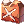
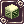
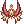
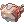
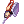
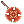
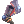
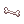

Vaults' Post-Verus Mado Mechanic Guide
| Mechanic (Madogear) | |||||||||||||||||||
|---|---|---|---|---|---|---|---|---|---|---|---|---|---|---|---|---|---|---|---|
 | |||||||||||||||||||
| Job Base: | Merchant | ||||||||||||||||||
| Written By: | Vaults | ||||||||||||||||||
| |||||||||||||||||||
Introduction
G'dai! This is Vaults, one person crazy enough to main a PvM Mech...since BEFORE the Verus update.
I'm just here to share my totally average and casual knowledge from experience of playing this class for years, especially after the Verus update made them a lot more easily viable.
So here I go: Let's talk about the mechanics of Mechanic.
(I focus more on PvM so my knowledge on PvP will be very limited and I'd appreciate it if someone gonna contribute on that or just make another PvP Mado guide).
Brief Overview of Mechanic
Before Verus, it is very rare for people to make a Mechanic for PvM purposes. Mechanics were mostly made for WoE solely for their game-breaking utility moves Neutral Barrier/Stealth Field and an overpowered AoE skill Self-Destruct that can instantly wipe out a group of enemies albeit putting your Mado out of commission for a while.
The recent episode 15 Phantasmagorica update is what really allows Mado to shine in PvM. It gives Mechanics their own set equipment, and just recently, cards. These mostly buffs their dps output and a little bit of tankability. While you still can't outdamage Rebel or Rangers, the added tankiness and self-healing ability makes it a great solo instance runner, and even better dps if you can find a guild and party that is willing to support and let you join in their runs.
In the future, look forward for the Nightmare Biolab headgear, which gives more damage to Arms Cannon and Axe Tornado.
Pros
- VROOM VROOM TURBO SPEED! As of the latest patch, Madogear with
 Madogear License lv 5 will get an extra movement speed, which combined with
Madogear License lv 5 will get an extra movement speed, which combined with  Acceleration and
Acceleration and  Hovering, will give you Speed Potion-tier movement speed much like Genetic's Cart Boost!
Hovering, will give you Speed Potion-tier movement speed much like Genetic's Cart Boost!  Front Slide and
Front Slide and  Back Slide are very useful mobility skills that allows you to easily escape fatal situations. With Bragi, these skills becomes spammable, making you technically the fastest class in RO[1].
Back Slide are very useful mobility skills that allows you to easily escape fatal situations. With Bragi, these skills becomes spammable, making you technically the fastest class in RO[1].- The latest Mado Patch also gives you extra weight limit and faster HP recovery while wearing the Madogear.
- All the Merchant class advantage (high weight limit, cart, instant OC/DC, item appraisal, vending), making farming a hella lot easier and more effective for you.
- Refining stuff: as a Nova custom, job lv 1 Mech has the same +10% refine success rate as a job 70 Whitesmith. Since forging is no longer a thing in renewal, this is the only crafting aspect that is still relevant from your whitesmith days.
- Being tanky: Mado Mechs are generally tankier in build and have tankier equips.
- Okay dps: You may not be the top dps in a party, but you still deal good damage and solo/duo run MvP and instances.
- Being instantly useful in WoE/PvP: PvP role as a mech is pretty straightforward - you just put on Neutral Barrier or just explode for a guaranteed kill.
- Insta 23% HP recovery. It does require a catalyst but you can simply buy it and it isn't as expensive or hard to farm as what other classes needs.
- Weird utility skills: Mados do have plenty of mobility, trapping, defensive and debuff skills, but you do need to get used to it.
- Repairing stuff: with the new item Emergency Mado Gear (1,350,000 zeny from the Prontera Mado Dealer), you'll be able to dismount your Mado, repair an equipment then remount back, which might be a total lifesaver in long instances such as Endless Tower/Cellar and OGH. Don't forget to give your party a Weapon Perfection buff before you remount! (you still won't keep your blacksmith buffs when you remount).
- You can show off your buffness with that shirtless outfit. but you will hide inside the robot all the time
Cons
- Priest buff limitations : You can't be Healed (Including Renovatio) and receive Increase AGI
- For healing, you have access to Repair that instantly heals 23% of your HP. Also, you CAN be healed by Sanctuary and Epiclesis.
- You can increase your walk speed with Acceleration and Hovering, however you will still miss out on the actual AGI stat, including FLEE and ASPD boost.
- However, you are able to receive ASPD boost and movement speed from Swing Dance, Wind Walk, and Assassin Cross of the Sunset.
- Costly. Because the concept of merchant classes is basically throwing money to be useful. However, as opposed to Genetic, all your catalyst and consumables can be bought from NPC so you don't need to farm anything. (unless you want to use the mini robot FAW thing). Also from my experience, being able to farm a lot and sell with instant Overcharge covers the cost in the long run.
- Fuel and Overheat. These are two handicaps that is given to us by Gravity because they think our mechanical robo is too op for the natural world of Midgard.
- Fuel is used for everything from dealing damage, to increasing mobility and other utility moves, on TOP of other actual attack consumables such as Cannon and Bullets. Making sure that you always have enough Fuel in your cart and constantly moving it into your inventory is one thing you need to get used to as you play this class.
- Overheat is a thing that happens randomly as you do your skills, causing you to lose HP over time. It is very important to get
 Emergency Cool ASAP as it is the only thing that can cure this. In the future, a kind of counter would be applied to indicate how far away you are from getting an overheat.
Emergency Cool ASAP as it is the only thing that can cure this. In the future, a kind of counter would be applied to indicate how far away you are from getting an overheat.
- Might be hard to get into random parties. Mechanic is not quite what most people will look for when they LFM. Therefore it will be good if you can find a good group of friends or a guild who is willing to support and work with you in their runs. Ooooor of course you can also solo everything like I do ;)
Stats Overview
- STR - This is your main stats. Increases ATK and pretty much all your skill damage. Increases weight limit, allowing you to carry more ammo, fuel, and farming capacity.
- AGI - Increases Flee and ASPD (Attack Speed). Higher ASPD reduces animation delay, allowing you to spam skills more. Also adds resistance to debuffs such as Sleep and Shadow Chaser's Masquerades.
- VIT - Mados do need to be tanky. Adds MaxHP, Defense, and Stun resistance. Also, HP increases SD (Self-Destruct)'s damage.
- INT - Increases SP, which also adds SD damage. Helps reduce variable cast time.
- DEX - Reduces variable cast time. Increases the ranged damage bonus from Menblatt Card. 120 is needed to activate Temporal DEX Boots' fixed cast reduction bonus. Hit is also good although you do have Arms Cannon that never misses.
- LUK - Every 3 luk adds 1 ATK. Add stats in this when adding more STR gets too costly for ATK. Also adds Perfect Dodge and some debuff resistance.
Relevant Skills
I will only overview Mechanic Mado Skills, because as we all know, most Blacksmith/Whitesmith skills becomes irrelevant once you are in Mado. And Merchant skills are very much self-explanatory.
Most of these skills consume  Madogear Fuel, a Catalyst and an Equipment. In NovaRO, all these things can be bought from the Mado dealer northeast of the Prontera fountain. For the Equipment, they only needs to be in your inventory, no need to be equipped.
| Skill | Notes |
|---|---|
| Madogear License
|
Increases ATK and Movement Speed. Why would you not want this maxed up.
Fun fact: The ATK bonus is applied even when you're not in mado, so maxing it is good even for Axe Mechs! |
 Mainframe Restructure Mainframe Restructure
|
Adds 100 DEF and increase Overheat limit. Max this thing and be le tank.
Just like Madogear License, the defense bonus applies even outside Madogear too! |
 Repair Repair
|
Recovers up to 23% of your HP. Mados can't be healed by Priest's healing skills so you need to heal yourself with this or use consumable items. If there are 2 Mados in a party (which is unlikely tho) you can even heal each other! While it's logical to get max level, you can survive with level 3-4 (which uses a cheaper catalyst), or even not take it at all and use only consumables.
Requires: Madogear Fuel, |
 Pile Bunker Pile Bunker
|
Cancels defensive buff on the target. A PvP-oriented skill that is sort of a specialized Dispel for tanks. Although it is a short range skill so it might be a bit awkward trying to get to the target, since believe me no one wants to get close to a Mado....
In PvM, it is also helpful for MvPs that casts annoying defensive skills like Celestial Tendrillion Dark. Pile Bunker that thing and let the Rangers go on with their everyday business of beating it down. Requires you to equip one of the a Pile Bunker weapons, which is kinda obvious. |
 Knuckle Boost Knuckle Boost
|
This is your main one target dps as a Mado. Spammable long range 700% dmg + bonus 50% from double Gun Barrel. One of the only skill that has absolutely no catalyst, so it's good for your wallet. |
 Vulcan Arm Vulcan Arm
|
An instacast low damage ASPD-spammable AoE long range attack. The new card ( Requires |
 Cold Slower Cold Slower
|
A nice large AoE ranged Water-elemental skill with chance of giving Frozen and Freezing on the target. The Cast Delay is lengthy, so this is more well-suited for kiting. Because it's Cast Delay tho, it means it can be nullified inside Bragi, allowing you to SPAM it at ASPD speed, making it really great for dps or spreading status in PvP!
Requires: Madogear Fuel and |
 Flame Launcher Flame Launcher
|
While Cold Slower is good for kiting, Flame Launcher is good while tanking. The cool skill animation and targetting system is actually sort of misleading, because the skill only hits the 5x5 area in FRONT OF YOU. It IS spammable, so as long as the mob you're tanking is not resistant to fire, this will do well as an AoE dps. I use this as my main dps for the Hazy Forest and Scaraba mobs.
Requires: Madogear Fuel and equipment |
 Arms Cannon Arms Cannon
|
THIS is your main true ranged AoE skill. The skill's mechanic is that the higher the level, the higher the damage but the AoE, cast time and delay gets worse. For this reason, many people actually prefer to use level 2/1 for larger AoE and spammability, while lv3 is reserved for if you can control the mobs to be very tight together (e.g after trapping with Magnetic Field).
Take note that the damage is also very heavily affected by the monster size, so you will deal less damage the larger the enemy is. Requires: Madogear Fuel and a cannon ball. |
| Acceleration
|
Increases your walk speed. Level 1 should be enough because you can just keep spamming it, but if you wanna save fuel or just have skillpoints lying around, it doesn't hurt to max it. I personally take level 2 so it's the same duration as Hovering.
Requires: Madogear Fuel |
| Hovering
|
Hovering is indispensable in PvP because it lets you just dash through any sort of trap, like Vacuum Extreme. It's supposed to bypass ground-targetted magic too but obviously Gravity forgot about that. In fact, I can't find any information on the complete list of skills bypassed by this skill so if anyone wanna contribute that, please do so.
In general use, using both Acceleration and Hovering gives you an above average movement speed, and of course, allows you to trap mobs with Magnetic Field without being stuck yourself. Requires: Madogear Fuel |
| Front Slide
|
Self-explanatory skill, it helps you getting out of mob hitlock and is a good mobility skill. You can get either or both - Front Slide is good when you're moving somewhere, Back Slide is good to use after you are attacking.
Requires: Madogear Fuel |
 Shape Shift Shape Shift
|
Changes your armor's element. Useful for very specific MvPs that casts very specific very powerful elemental attacks, such as Charleston 3 and Valkyrie's LoV (Wind), Ifrit's MS (Fire) and various MvP's Endless WaterBall™ (Water).
Requires: 2 Madogear Fueland a Sorcerer Elemental Point (Purchasable next to the Mado Dealer NPC). This skill apparently can be casted without the required Accessory. |
 Infrared Scan Infrared Scan
|
Pretty much almost screen-wide Sight. Good in PvM to deal with hiding monsters, although in PvP, I find that people easily just go back to hiding right away because the effect doesn't stay. It does give Flee penalty tho, that's a thing. |
 Analyze Analyze
|
Pretty much halves target's DEF/MDEF. Useful for MVPs with insane defenses, although the duration is rather short (20 secs). The success chance is 66% but there is no visual indicator of whether it is successful or not. The only way you can tell is whether your damage goes up or not.
It has a lengthy cast time that can be interrupted so you need to time your usage well. Requires: Madogear Fuel |
 Self Destruct Self Destruct
|
This and Neutral Barrier is the reason guilds recruit you for WoE, and makes you feared in PvP. Can one-hit kill almost everyone with even barely any gears, but it does remove your Madogear with a very lengthy cooldown.
Requires: 3 Madogear Fuel and equipment |
| Emergency Cool
|
This is the only way to cure Overheating. Overheating is a thing that happens to Mados when you use too much skill, it causes you to lose HP over time. Get this skill ASAP and remember the hotkey so you are always ready to hit it whenever Overheating occurs.
In the future, there will be a counter that shows how far away you are from Overheating. Requires: Madogear Fuel and equipment |
 Magnetic Field Magnetic Field
|
Traps targets on 5x5 area around you. If you are in Hovering, you can just walk away from it, but even if you forgot you can quickly just Front/Back Slide away. You can then hit your locked target with things like Arms Cannon. However, this drains your SP really bad - Max Lv drains 50SP/s for 8 seconds - which is 400 SP! Your target will get that much SP drained too, tho.
Requires: 2 Madogear Fuel and equipment |
 Neutral Barrier Neutral Barrier
|
You becomes a walking 7x7 Pneuma. This is that other skill that makes Guilds recruit you. It is indispensable in precast situation to protect people and barricades, and while walking through a castle.
It also adds 25% DEF and MDEF, which helps against attacks that you don't block. This used to be a very tricky skill as it also makes skills casted from inside the AoE to also miss. However, as of the latest patch, the skill has turned into a proper Pneuma so you can now more freely use it without worrying about making your teammate's attacks miss. Note: Neutral Barrier's timer is currently bugged so you will not be able to know how much duration you have left. In the case that you need a continuous NB, it is good if you manually count the seconds so you know when to prepare to recast the skill. (Duration at lv1 : 30s, lv2 : 45s, lv3 : 60s.) Do NOT recast while active, as it will cancel the skill while applying its cooldown, leaving you vulnerable to whatever you are trying to defend yourself from. Requires: Madogear Fuel and equipment |
 Stealth Field Stealth Field
|
This skill is nice, but most of the time not required since NB is more preferred. Gives camouflage effect to everyone in 5x5 area around you, which means they can't be targetted. But you can, so you will be taking all the hit and you need to be tanky enough for that.
Requires: 2 Madogear Fuel and equipment |
 Magma Eruption Magma Eruption
|
Max this ASAP. Blessed are us for being able to use this skill while in Mado. This skill is useful for both types of Mechanics, it is INSANELY good for levelling because of its set damage and farming/crowd control, because of its stun/burning chance. Take note though that if you teleport or go out of screen from the monsters, then they die from burn, you will NOT get the loot. |
 Axe Boomerang Axe Boomerang
|
Axe Boomerang is the highest one target dps skill you get. And yes, it's an axe mech skill, but guess what, you CAN use the Mechanic Axe skill even in Mado! And fun fact: you CAN chain Axe Boomerang and Knuckle Boost. |
 Axe Tornado Axe Tornado
|
Your Axe AoE option. This skill also allows you to hit enemies inside your Neutral Barrier. |
 FAW Silver Sniper FAW Silver Sniper
 FAW Magic Decoy |
Creates tiny helper robots. Their dps is not that great, but I find they can be useful to hold your mob for a while, since they last quite long thanks to their self-heal. These robot's attacks counts as yours, so it is capable of proc-ing Hawk Eye/Speed of Light (Silver Sniper), Runaway Magic (Magic Decoy) and all other similar equipment effects. Therefore it is a valid strategy to put Silver Sniper while you dps to add a slight more chance of getting these procs. Monster drop from their kill also goes to your inventory, so you can pretend to be an AFKemist for like 1 minute. Requires: |


Equipment

Thanks to the Verus update, Mechanic now have a standard set of gear which you can aim for once you graduate from those freebie Eden gears. While Mado Mechs don't rely on these as much as Axe Mechs, it would still be ideal to obtain some of these as soon as possible.
- The armors can be bought directly from the Charleston NPC for 4m, making it the very first thing you can buy.
- The accesories
requires you to run the instance, but because of how absolutely essential they are, you might find them being vended for prices from 4-8m. GET THEM AS SOON AS YOU FIND THEM.
- The boots is dropped by the instance MvP so people often vend them for quite cheap. Unfortunately, the Mado boots is pretty much useless, so unless you want the set bonus, it would most likely just be a placeholder until you can afford the Temporal Boots,
- The manteaus would probably be the rarest one, because they are not that popular, people very rarely vend them, so most likely you'd need to run the instance to obtain them.
These equips are also enchantable. More details on the equips and ideal enchants will be elaborated below.
Unfortunately, unlike the Mora quest, which is more popular because it applies to many jobs (mainly Rangers), and is a lot easier in difficulty, Charleston instance is incredibly unpopular and is quite hard to do unless you are maxed out. And now that Crimson Mace becomes an easier alternative to Robot's Mechanical Arm, even less people would run this instance. It is advised that you join a nice PvM guild or have friends to privately run this instance together with.
More information on the Verus Equips: Verus Equipment Exchange
More information on the Charleston Instance and Enchants: Charleston Crisis
Munbalanced's video of running the instance on Mado Mech
Price Bracket: Very Cheap (<4m) | Cheap (4m-9m) | Average (10-20m) | Expensive (20m-40m) | Very Expensive (40m-100m) | VERY Expensive (>100m)
Headgears
| Item | Type | Way to obtain | Avg. Market Price | Notes |
|---|---|---|---|---|
| Upper | Job Change | Free | You can get these for free from job change. This alone is better than any other entry-level pre-re stuff you can think of. | |
 Rideword Hat [1] Rideword Hat [1]
|
Upper | Cash Shop/Quest. | Average | Adds a chance to drain your damage as HP/SP. Popular farming headgear for everyone, or for times when survivability is more important than damage. |
 Ship Captain Hat [1] Ship Captain Hat [1]
|
Upper | Cash Shop | Expensive | +7% Ranged Damage. Best option. You can share this with any other character you got since you know, everyone does ranged attacks in renewal. |
 Sea Captain Hat [1] Sea Captain Hat [1]
|
Upper & Mid | Cash Shop | Expensive | You ONLY wear this if you run hybrid or just pure Axe Mech. It boosts the Axe skills damage and nothing else. |
 Ancient Gold Ornament [1] Ancient Gold Ornament [1]
|
Upper | Instance | VERY Expensive | Gives +8% ATK to you - however, +% ranged damage is generally better so Ship Captain Hat is probably a better choice than this considering the massive price difference. |
|  Crown of Deceit [1] | Upper & Mid | Cash Shop | Expensive | If you are really keen on reducing your cast time, this is an option. You can also share it with your caster characters. Get this to +7/+9 if you are hardcore. |
 Robo Eyes Robo Eyes
|
Mid | Cash Shop | Expensive | +1 DEX and +2% ATK. Plus WHY WON'T A ROBOT HAVE ROBOT EYES RIGHT?? |
| Any Slotted Mid Headgear | Mid | ?? | ?? | You can slot selected mid headgear using a  Spiritual Auger, which is a Cash Shop item. Otherwise, Spiritual Auger, which is a Cash Shop item. Otherwise,  Monocle [1] is also droppable. Having a slotted mid headgear allows you to put an extra headgear card for more stats or status immunity. Monocle [1] is also droppable. Having a slotted mid headgear allows you to put an extra headgear card for more stats or status immunity.
|
 Gangster Scarf Gangster Scarf
|
Lower | Cash Shop/Quest | Average | +5 ATK and +100 badassness. |
 Well-Chewed Pencil Well-Chewed Pencil
|
Lower | Cash Shop | Expensive | +2 DEX. Good if you wanna stack up DEX for instacast. |
Cards
| Card | Avg. Market Price | Notes |
|---|---|---|
| Average | Most popular ATK headgear card. Adds +10 ATK and a chance to give you a poisonous herbs. | |
| Average | Basically a much less common Dark Pinguicula but instead of the annoying herb drop you get a chance of getting +10 Perfect Dodge which is so much better. | |
| Average | Reduces Cast Time, but requires an overupgraded stuff to be useful. |
Essence of Evil
Essence of Evil are rewards from the Temple of the Demon God Instance. They are like cards that is not limited to a specific kind of equipment, meaning that you can stick it up any hole you have open in your body ;)
Ideally you would want the Level 3 Essence, but they can run for over 10m. Meanwhile, the Level 2 Essences can be bought for less than 1m making them really good entry-level stuff to put on your slotted equipments.
| Type | Notes |
|---|---|
 Essence of Evil STR Essence of Evil STR
|
Adds STR and ATK. Obviously good for brute force, but adds an INT penalty that might be detrimental if you want to build for more SP or cast reduction. |
 Essence of Evil DEX Essence of Evil DEX
|
Adds DEX and HIT, ideal if you wanna stack more DEX for instacast. |
 Essence of Evil VIT Essence of Evil VIT
|
Adds VIT and defenses, making it ideal for a more tanky build. |
Armors
| Item | Way to obtain | Avg. Market Price | Notes |
|---|---|---|---|
 STR Supplement Part STR Supplement Part
|
NPC Buy | 4m | While this is aimed more towards Axe Mechs, it gives you instant +6% ATK at +4, making it a lot more ideal if you want more ATK in general.
Ideal Enchants would be AGI/Attack Delay. At +9, you can get Defensive Enchants, such as Neutral Resist, VIT, DEF and MHP%. |
|  Reinforced Part - Plate | NPC Buy | 4m | This is the Armor part of the Mado set. It is a defensive equipment that reduces 10% dmg from Small/Medium enemies, Large enemies at +7 and further 5% from Medium/Small monsters at +9. Otherwise, you need the rest of the Mado set for the Arms Cannon damage boost.
Ideal Enchants would be AGI/Attack Delay. At +9, you can get Attack Enchants, including Expert Archer (!!!!), Fighting Spirit, STR and DEX. Obviously, GET ALL EA IF YOU CAN (dem rangers can get +9 WWSuit why can't you) |
 Hero Trade Mail [1] Hero Trade Mail [1]
|
Instance | Average | The Verus Armors have no slot, so if you need slot for a specific armor card, this is a good default armor to use. Gives good HP/SP and ATK boosts, and at +4 gives 2 points to any of your stats that reaches 90. |
 Ancient Armor of Rift [1] Ancient Armor of Rift [1]
|
Instance | Cheap | This is another option that you can easily make yourself if you are capable of clearing the Infinite Space Instance. The Armor can be enchanted for up to +8 DEX, making it quite good if you want to stack up stats for instacast. |
 Abusive Robe [1] Abusive Robe [1]
|
Quest | Very Expensive,
VERY Expensive at +7 |
The best option for slotted armor would be +7 Abusive Robe. It does gives you 28% defense bypass on Demi-Human, Demon and Undead Enemies (which is kinda 90% of endgame enemies), but the most important thing is that it can be enchanted, allowing you to get +10 - +14 bonus DEX, which brings you ever so closer to that instacast dream. |
Cards
| Card | Avg. Market Price | Notes |
|---|---|---|
| Average (Thanks to Excellion) | THIS is probably the reason why you want a slotted armor. It adds 8% MHP and 30% long range reduction, and when combined with | |
| Immunity Cards | Marc Card to avoid being Frozen, Evil Druid Card to avoid both Freeze and Stone Curse, Bathory Card to not die from Grand Cross of Darkness, etc. |
Weapons
Pile Bunkers
Pile Bunker is the main weapon for Mados, boasting one of the highest weapon ATK in the whole game.
| Item | Type | Way to obtain | Avg. Market Price | Notes |
|---|---|---|---|---|
| Mace | MVP Drop/NPC Craft | Average | This variant of Pile Bunker is probably a lot more common and cheaper than the regular Pile Bunker because it drops from the MVP of Charleston Instance. Which means there is more chance to overupgrade it as well! Plus it is a 450 ATK weapon with MORE ATK per refine, what's not to love? Oh right, the lack of card slot. | |
| Mace | NPC Craft | Average | This Pile Bunker variant needs to be crafted from the original  Pile Bunker, which needs to be crafted from  Brocca, a 10m+ Biolab MVP drop, making it a lot harder and more expensive to obtain than Pile Bunker P. But I'm sure you can guess why this weapon would be valuable: It has a card slot. Brocca, a 10m+ Biolab MVP drop, making it a lot harder and more expensive to obtain than Pile Bunker P. But I'm sure you can guess why this weapon would be valuable: It has a card slot.
This variant reduces Cooldown by 1% per refine, which combos well with other cooldown-reducing equipments Mado has access to. Unfortunately it is very hard to obtain making it unlikely that you get it in high refines. | |
| Mace | NPC Craft | Nonexistent | This is the other slotted Pile Bunker option from the Pile Bunker exchange quest above. It is less popular because it reduces SP cost by 1% per refine instead, which is a less impressive effect compared to the cooldown reduction of the S variant. However, if you are not interested in cooldown reduction because you have access to Bragi, then this is actually a viable option to consider, as Mados do run out of SP pretty fast. |
Crimson Weapons
Crimson Weapon's strongest appeal is the fact that it is easier to get beyond +10 and has 2 slots, which enables you to use 2  Lock Step Card for a total of +80% Arms Cannon damage. While
Lock Step Card for a total of +80% Arms Cannon damage. While  Step Card also behaves the same way, the Crimson Axe unfortunately doesn't have sufficient ATK and Weight to make it better than the other options for Axe Boomerang.
Step Card also behaves the same way, the Crimson Axe unfortunately doesn't have sufficient ATK and Weight to make it better than the other options for Axe Boomerang.
Any element will do as you can easily override it with endow and Cannon Ball element.
| Item | Type | Way to obtain | Avg. Market Price | Notes |
|---|---|---|---|---|
| Crimson Two-Handed Axe [2] | Axe | Monster Drop | Varies - VERY Expensive at +10++ | A lot of ATK, but is two-handed so you can't wear Shield. |
 Crimson Mace [2] Crimson Mace [2]
|
Mace | Monster Drop | Varies - VERY Expensive at +10++ | Less ATK but allows you to wear a Shield. |
Axes
In the case that you want to run a hybrid Axe Mech, these are the Axes I would suggest:
| Item | Type | Way to obtain | Avg. Market Price | Notes |
|---|---|---|---|---|
 Giant Axe [1] Giant Axe [1]
|
Axe | MVP Drop | Cheap | While on the surface Doom Slayer seems to have more ATK/Weight than Giant Axe, the 340ATK bonus from Doom Slayer is an Equipment ATK that is calculated differently from its original 10 Weapon ATK, making it actually weaker than Giant Axe, which has pure 330 Weapon ATK. However, Doom Slayer does have a Stun Chance (need to confirm if it works with skills), and both Axes can be Malangdo Enchanted - so if you can get 2 Expert Archers on these axes, you'll be set. |
 Thanatos Axe [1] Thanatos Axe [1]
|
Axe | NPC Craft | Very Cheap | This Axe has a chance to drain your damage as HP/SP, much like the Rideword Hat, making it ideal for farming. And it is very easily accesible - you can start farming it the moment you can solo Ghost Palace, so you can overupgrade this weapon easily. |
| Axe | MVP Drop | Cheap | This Axe drops from the Charleston MVP. It is a MUST if you plan to use Axe Tornado, but it also has decent ATK/weight to be used for Axe Boomerang as well! | |
| Vellum Guillotine [1] | Axe | Monster Drop | Average | THIS is the probably the best Axe for Mechanic, in terms of ATK/weight. And not even counting the PvP bonuses, which will definitely allow you to one-shot anyone who is not a tank! You'll also find the +7/+9 versions of this weapon being vended regularly, albeit for very expensive prices. |
While all of these Axes have huge power, they are also Two-Handed, which means you will not be able to wear a shield, making you squishy! If you want to run an Axe build while still carrying a shield, here are the less powerful One-Handed options.
| Item | Type | Way to obtain | Avg. Market Price | Notes |
|---|---|---|---|---|
|  Vecer Axe [2] | Axe | MVP Drop | Cheap | It is a common biolab drop, making them rather cheap with affordable +10 variants popping up in vends every now and then. It can also be enchanted with in Malangdo with a chance for Expert Archer. |
 War Axe [1] War Axe [1]
|
Axe | MVP Drop | Cheap | It is about 3 times as heavy as Vecer Axe, so it will deal better damage, although it can't be enchanted with Expert Archer. So if you can get Vecer Axe with a really good Expert Archer enchants, it should be just as good as this one. |
Cards
| Card | Avg. Market Price | Notes |
|---|---|---|
| Average | It's that card that people would sell their bodies for. +10% Ranged Damage, can't go wrong with this. | |
| Cheap | +25% dmg to Boss protocol monsters. Not just MvPs! | |
| Average | Flat +25 ATK with no drawbacks at all. | |
| Average | Flat +30 ATK, but has SP drain. | |
| Racial/Elemental Damage Cards | You can get a card that adds 20% damage to the specific monster race you're planning to hunt, for example | |
| Very Expensive | When combined with | |
| Average (Thanks to Excellion) | Increases Arms Cannon damage by 20%, 40% if your weapon is +10. In NovaRO, the only likely weapon you can get to +10 are Crimsons, so you can use that for pure Arms Cannon Build. | |
| Very Cheap (Thanks to Excellion) | Increases Axe Boomerang damage by 30%, 60% if your weapon is +10. Now, Giant Axe and Doom Slayer are a lot more common than Pile Bunker, so there might be a good chance you can get one +10, in which case put this thing on and wreck havoc. | |
| Very Cheap | Increases Vulcan Arm damage by 10%, 30% if weapon is +10. It is simply a cheap option to get the No Fuel set, unless you want to go for a meme Vulcan Arm Build. |
Shields
You can't wear shield when you are wielding Two-Handed Axe.
| Item | Way to obtain | Avg. Market Price | Notes |
|---|---|---|---|
 Royal Guard Shield [1] Royal Guard Shield [1]
|
Quest | Expensive | This shield gives you 10 DEF/1 MDEF per refine, so ideally you'd want it +6/+7 to make it better than most other shields. But the most exciting thing about this shield is that it gives you Lv 1 Shield Spell, which has a chance to give you +30 ATK for 90s. There is also a rather small chance for it to give you Lv 3 Assumptio. |
 Round Buckler [1] Round Buckler [1]
|
Monster Drop | Very Cheap | Very easy to obtain entry-level shield. You can farm these in Orc Village to get them overupgraded if you want. |
 Bradium Shield [1] Bradium Shield [1]
|
Monster Drop | Cheap | This shield has the highest defense and flat HP bonus, which would be kind of a boost for Self Destruct. I would reccomend this. |
 Valkyrja's Shield [1] Valkyrja's Shield [1]
|
Monster Drop | Cheap | The bread and butter shield for any MVPer, because it adds MDEF and elemental resistance. However, Mados do have Shape Shift that may make MVP's magic attacks negligible, so you may still use Bradium shield for the extra defense. |
| Cash Shop | Average | This thing gives 5% ATK and further at +7 and +9, but adds very little defenses. Basically you wear this if you just want MOAR ATK even on your Shield slot! |
Cards
| Card | Avg. Market Price | Notes |
|---|---|---|
| Expensive | The bread and butter card for tanking MVPs. However it increases damage from regular monster so make sure to switch it out when not dealing with bosses. | |
| Expensive | The card to reduce 15% damage from pretty much ALL monsters, with a nice PDodge proc chance. | |
| Racial Reduction Card | Get a card that reduces 30% dmg from the specific monster race you are facing. The most popular ones being | |
| Very Expensive | Set with |
Garments
| Item | Way to obtain | Avg. Market Price | Notes |
|---|---|---|---|
 Reinforced Parts - Engine [1] Reinforced Parts - Engine [1]
|
NPC Craft | Average | This is the Manteau part of the Mado Arms Cannon set. It cuts 10% cast delay (20% at +9) which is nice to make your skills more spammable, and adds 10% Neutral Resistance at +7 which helps you to tank. Getting it to +7 at least is ideal, if you can afford it.
Ideal Enchants would be STR/DEX/Expert Archer (!!!), at +9 you can get an even higher levels of Expert Archer!! |
 VIT Supplement Equipment [1] VIT Supplement Equipment [1]
|
NPC Craft | Average | This manteau is more geared towards Axe Mechanics because it boosts Axe Tornado. While it also adds MHP%, I still don't see much reason to wear this one if you don't plan to use the Axe Tornado skill.
Enchants are the same as above. |
 Heroic Backpack [1] Heroic Backpack [1]
|
Numerous Sources | Cheap, Expensive at +7 | Well this is the bread and butter endgame garment (at least until we get FAW), at +7 it gives bonuses according to stats you have above 90. Ideally, you'll have above 90 STR, DEX, and VIT, giving you +20 ATK, +10% Neutral Resistance, and +5% Ranged Damage. |
 Giant Snake Skin [1] Giant Snake Skin [1]
|
Instance | Average | While Heroic Backpack seems like the best thing on the surface, if you are really aiming for a certain stats number for things like ASPD or Instacast, the flat Stats bonuses from GSS would be more desirable. The lower refine GSS are incredibly cheap too, making them good entry-level garment, while the +10/+11 ones will run for around 10m, which is still affordable end-game. |
Cards
| Card | Avg. Market Price | Notes |
|---|---|---|
| Average | Adds 1% Ranged DMG every 10 DEX, meaning that if you run 120 DEX for Temporal DEX Boots, you'll get +12% Ranged DMG. That's a LOT, me telling ya. | |
| Average | In the case that you run a build that doesn't have much DEX for whatever reason, this is the similar card that takes the STR stats instead, adding 5 ATK per 10 STR. | |
| Average | 20% Neutral Resistance. This is a tanking card and you will want this if you want to focus more on survivablity. |
Shoes
| Item | Way to obtain | Avg. Market Price | Notes |
|---|---|---|---|
|  Reinforced Parts - Booster [1] | NPC Craft/MVP Drop | VERY Cheap | This is probably the least desirable thing that drops from the Charleston MVP, because of how utterly useless the individual equip effect is. I mean, it negates the SP cost of Acceleration and Hovering, but who has ever run out of SP from spamming Acceleration/Hovering? If it negates the Fuel cost, in the other hand.... Really, only take this if you plan to get the Arms Cannon set bonus. Otherwise, the other boots is better.
Ideal Enchants are STR/DEX/Spell/Attack Delay. At +9, you can get Spell2/Attack Delay2, which may finally make this thing the least bit more useful. |
 AGI Supplement Part [1] AGI Supplement Part [1]
|
NPC Craft/MVP Drop | Very Cheap | This is the better boots, which adds ASPD% and MHP%, however more desirable effect of this boots is the set bonus with STR Supplement Part that adds +30 ATK.
Enchants similar to the above except it doesn't have Spell at +9. |
 Temporal DEX Boots [1] Temporal DEX Boots [1]
|
NPC Craft | Expensive | THIS is the endgame boots to aim for - the DEX version is particularly essential for Mados because with 120 DEX, you unlock the bonus that cuts ALL THE FIXED CAST TIME of Arms Cannon (and Flame Launcher). The bonus DEX and +5% Ranged DMG is very much welcome too, of course.
Go for Expert Archer for the first enchant, and for the second enchant, Hawkeye will be nice because it gives you instacast when it procs, but since everyone wants Hawkeye, Bear's Might or Speed of Light will be a lot more affordable as they are considered "failed". BM works great if you tank around while SoL helps you occasionally reach 193 ASPD which is great because a Mado most likely won't achieve it without Minstrel/Wanderer/Doram support. |
 Temporal STR Boots [1] Temporal STR Boots [1]
|
NPC Craft | Expensive | +50 ATK at 120 STR, this is the more ideal boots for Axe Mech because they don't need the Fixed Cast time cut from Temp DEX, and technically, if you want to dps mainly with Knuckle Boost, this would be the better boots to get. Expert Archer/Bear's Might are still the ideal enchant to get. |
 Temporal VIT Boots [1] Temporal VIT Boots [1]
|
NPC Craft | Expensive | If you want to run very tanky, then you can use this one. If you want to go full tank, get MHP% and Muscle Fool enchant, but if you want to still dps, get EA and Bear's Might. |
Cards
| Card | Avg. Market Price | Notes |
|---|---|---|
| Average | +10%HP with extra VIT. | |
| Average | +10%HP with extra AGI. | |
| Average | +8% HP and SP, if you feel like you need to boost both. | |
| Average | +15% SP. SP adds more DMG to Self Destruct than HP, making this the most ideal card if you wanna use that skill. | |
| Expensive | +20% SP. The more expensive version of Sohee Card. | |
| Expensive | This Horror Toy Factory card is the only offensive card for footwear. +1% ATK with additional 1% each 2 refines, at the cost of your HP. If you just want as much BRUTE POWAH! as possible, then get this. |
Accessories
| Item | Way to obtain | Avg. Market Price | Notes |
|---|---|---|---|
 Reinforced Parts - Gun Barrel [1] Reinforced Parts - Gun Barrel [1]
|
NPC Craft | Cheap | THIS IS THE MOST IMPORTANT THING FOR MADOS. You wanna know why? +4% ATK, +25% Knuckle Boost Damage. Straight away. Not set, stackable, giving you +8% ATK and +50% Knuckle Boost damage. If you don't wear double of these things, WORK until you get double of these things.
Ideal Enchants: STR/DEX/Attack Delay/Spell. |
 DEX Supplement Part [1] DEX Supplement Part [1]
|
NPC Craft | Cheap | This is the item that makes Axe Mech. If you wanna run hybrid Axe Mado, you need this thing too. However, you'll only need one of these because the Axe Boomerang bonus doesn't stack (Sorry no spamming Axe Boomerang). The 10% Cast and Delay reduction is always a plus, too.
Ideal Enchants: STR/DEX/Spell |
| STR Glove [1] | NPC Craft | Cheap | While you are saving or waiting to get the things above, these ones will always work for a nice ATK boost. You can find them being vended regularly or you can do the New World Quests to get the Splendide Coins to make them yourself. |
 Bakonawa Agimat Tattoo Bakonawa Agimat Tattoo
|
NPC Craft | VERY Expensive | Now, generally you'll be fine with double Gun Barrel, but in case your main dps is NOT Knuckle Boost, e.g you want to maximise the dmg of with Arms Cannon, then these next accessories does offer more power than the Gun Barrel. The price difference is astronomical though, so aim for them only if you can afford them.
This one adds 7% ATK and 10% ASPD - unfortunately it isn't slotted, but the ASPD bonus will help with your animation delay |
 Physical Enhancer Ring [1] Physical Enhancer Ring [1]
|
NPC Craft | Very Expensive | +5% ATK, only 1% more than Gun Barrel and 1% less than Pendant of Maelstrom. However it might be a good choice over Pendant of Maelstrom if you do not want the Maelstrom proc, which may hinder your AoE magic dps if you are tanking.
With the new GMT Enchants, this accessory can potentially give you up to 6% more ATK, making it the strongest alternative to Gun Barrel. |
 Pendant of Maelstrom [1] Pendant of Maelstrom [1]
|
NPC Craft | Very Expensive | +6% ATK, all stats+1, chance to activate Maelstrom which is IMMENSELY USEFUL against MVPs that spams AoE Magic. But do check the price tag and decide. |
 Sarah's Right Earring Sarah's Right Earring
|
NPC Craft | Not Tradeable | This one you can't even check the price tag because it's NOT TRADEABLE!! The accessory itself offer nothing but an in-built Teleport skill, which is super nice, but it can be enchanted with Expert Archer, for up to +10% Ranged Damage!! But of course, you'll need to run the instance yourself, and the enchants are random with a chance of breaking the thing, So yeah, lots of effort to get there. |
Cards
| Card | Avg. Market Price | Notes |
|---|---|---|
| Expensive | These two card combo gives you in total 7 STR, 7% ATK, 7 AGI and 7 HIT, making it an obvious choice if you want more attack and ASPD. However if you want to stack DEX for instacast, your only other option is DEX EoE's. | |
| Expensive | This card used to be Best in Slot for accessory, now it's shadowed by the slightly more affordable Buffalo Bandit Cards above. | |
| Cheap | Just an utility card that allows you to not buy 10,000++ Fly Wings, having one thing carded with this will be very helpful for farming/questing. |
Mado Set or Not??
Now, that you have seen all the equipment options, the big question would be, to wear the Mado Set or not? Because unlike Axe Mechs, who only needs two pieces of equipments to unlock their bonuses, Mado needs the full set ( 
For beginner, it might be ideal to aim to get this set as it won't cost that much (as long as someone vends them and you don't need to run the instance yourself), but in the end-game you will have to make the decision between staying with this set or get the true end-game gears such as Temporal Boots, GSS and HBP.
This is the same dillema experienced by Rangers and their White Wings, but compared to their Arrow Storm, Arms Cannon is not that big of a deal in terms of damage and AoE. So is it really worth to keep wearing this set end-game?
- The first BIG thing that you will miss by wearing this set is the Temporal DEX Boots, which cuts ALL the fixed cast time of Arms Cannon (and Flame Launcher), making it less spammable. So it becomes more of an issue of more damage or more spammability, although if you want more damage, you can also opt for Temporal STR Boots, which also boosts your other dps skills not just Arms Cannon. The Mado Boots Booster, however literally has no advantage at all. seeing that the SP cost of Acceleration and Hovering is negligible already.
- Next is Giant Snake Skin. Now if you aim for more spammability, the GSS' flat bonus on DEX and INT can really help on reducing your cast time to near instacast, and the AGI boost for ASPD. The Mado Manteau Engine does cut 10% of your Cast Delay, but that might not compare to the cast reduction if you have GSS with high enough stats bonus. Furthermore, GSS worn with Temporal Boots adds 15% HP and SP, so it helps even for survivability.
- But the more common Manteau option for people who don't care about exact stats number would be the Heroic Backpack. with 90++ STR/DEX/VIT, you will get +20 ATK, +5% RangedDMG and 10% Neutral Resistance. Now, the Engine DOES have 10% Neutral Resistance at +7, but it adds no dmg boost UNLESS you do the +9 Enchant which may add Expert Archer.
- The Mado Armor, Plate, is a good armor for tanking, but it doesn't add any damage compared to the STR Supplement Part, which adds 6%++ ATK. Again, the only way to get dmg bonus from the Plate is by bringing it to +9 and get the Expert Archer enchant on it. Furthermore, if you need a slot for a specific Card, you can't use either armors.
- The Mado Accessory Gun Barrel, fortunately is a good decision all around and the only things better than it are Bakonawa Tattoo, Physical Enhancer Ring or Pendant of Maelstrom, which are probably not worth the astronomical price difference.
So in conclusion, the biggest disadvantage of wearing the set would be that your Arms Cannon becomes less spammable. However, this would not be an issue if you have Bragi and Sacrament support in your party. which will help you spam better. So in the case that you're doing a big party instance which has these two supports, you CAN wear the Mado Set and dps with Arms Cannon. Otherwise, if you solo, a less spammable Arms Cannon means that you will either have to kite or tank, which is quite troublesome.
It also only boosts Arms Cannon specifically, so if you plan on dps-ing with other skills as well, you'll be better off without the set. The only way the Mado Set will offer better damage boost on your other skills would be to bring the Plate and Engine to +9 and get the Expert Archer Enchants.
Getting the boots to +9 also gives you the chance to get the Spell enchant, which may help with the spammability issue.
Lastly, of course, you can hotkey equipment switch if you are good at it. To be fair, ONLY the boots is is the biggest disadvantage to this set, so usually I would run with the Plate, Engine, Gun Barrel but with Temporal DEX Boots. Then when you need the biggest damage of AC, you can quickly switch the Temporal DEX Boots with the Booster, activating the set bonus.
Builds
Knuckle Boost DPS Robo
This is the easiest DPS Mado to build, every Mado starts here. All you need really is 2 Reinforced Parts - Gun Barrel [1], which you can make yourself by running the Charleston Instance or buy for cheap, thanks to Excellion.
It is good enough to allows you to solo/duo instances/MvPs and farm stuffs.
Stats
- STR Very High (100-110)
- AGI Mid/High (60-90) (For ASPD spam)
- VIT High (80-100)
- INT High (80-90)
- DEX Max (120) (To activate Temporal DEX Boots)
- LUK Mid/High (60-90)
Skills

Equipment
- Ship Captain Hat [1] with
 Dark Pinguicula Card
Dark Pinguicula Card - Robo Eyes
- Gangster Scarf
- Reinforced Part - Plate For tankiness or STR Supplement Part for more ATK.
- Upgraded
Pile Bunker P or
Pile Bunker S [1] with
White Knight Card or a suitable Racial card - A Shield with Khalitzburg Knight Card or a suitable Racial card
- +7 Heroic Backpack [1] with Menblatt Card
- Temporal DEX Boots [1] with EA and BM/SoL/HE and Green Ferus Card/ Verit Card/ Sohee Card
- Double Reinforced Parts - Gun Barrel [1] with Gold Scaraba Card or the Shotgun/ Revolver Buffalo Bandit Card combo.
Strategy
Knuckle Boost will mainly be your dps, you'll be aiming at around 30-40k neutral unbuffed Knuckle Boost dmg. Use Lv 2 Arms Cannon for mob control.
You'd want plenty of ASPD for this since Knuckle Boost has little cast time and no cooldown, making it spammable. However, I find that without insacast, your spam doesn't really go any faster past 184 ASPD.
Thus, while Speed of Light can give you 193 ASPD occasionally, Hawkeye gives a much more superior dps boost as it gives you both Instacast and high ASPD.
Arms Cannon DPS Robo

If you seek satisfaction and pleasure beyond the ordinary and single-target dps of Knuckle Boost, you may want to build yourself towards the ways of Arms Cannon.
This is the more high-end build for PVM Mado and cost a lot more money, as it requires a +15 Crimson Weapon with 2 Lockstep Cards, which is valued up to 400m, unless you're lucky enough to refine/farm them yourself.
You also want to stack Cast Time reduction (DEX) and Cast Delay Reduction as Arms Cannon is heavy with that, but having a Bragi around will help immensely.
With a maximized build, it is very much possible to hit upwards 100k per Arm Cannon, spammable in Bragi. That would be like a spammable Axe Boomerang, wink wink.
And albeit you won't be investing in tanking ability much, you'll still be naturally tankier than most dps classes, so you can probably snatch some MvP's while the Ranger and Rebels are down from a HJ or EQ.
Stats
- STR High-Max (100-120)
- AGI Mid-High (50-100)
- VIT Mid (50-70)
- INT High (80-100)
- DEX Max (120)
- LUK Mid-High (50-100)
Skills
Same as above.
Max Damage Build
This build utilizes the Mado Set for maximum Arms Cannon Damage Output. The downside is that you miss on Temporal DEX Boots, so you won't be able to bypass the Fixed Cast Time of Arms Cannon, making it less spammy. However, with the help of Sacrament and Bragi you'll be able to spam your 100k++ Arms Cannon a lot better.
As this build sacrifices a shield for more power, it works best in a party where you won't be taking a lot of damage.
- Equip
- Ship Captain Hat [1] with Dark Pinguicula Card
- Robo Eyes
- Gangster Scarf
- Reinforced Part - Plate(+9 with DEX/AE Enchants ideal but not required)
- +10 - +15 Crimson Two-Handed Axe [2] with double Lock Step Card
- Reinforced Parts - Engine [1] with Menblatt Card (+9 with DEX/AE Enchants ideal but not required)
- Reinforced Parts - Booster [1] with Outrageous Cookie Card (+9 with DEX/Spell/ASPD Enchants ideal but not required)
- Reinforced Parts - Gun Barrel [1] with Gold Scaraba Card and DEX Enchants
- another Gun Barrel or Pendant of Maelstrom [1] with Gold Scaraba Card
Fast Cast/Longevity Equip
This build ditches the Mado Set (except maybe the Engine), allowing you to wear the Temporal DEX Boots that nullifies your Fixed Cast Time, as well as a slotted armor for the Kick Step Card combo so you don't need to carry Fuel anymore.
This build works well for solo play especially if you wear Mace and Shield and stack enough Cast Delay reduction that you can spam well even without a Bragi support. You may want to use Arms Cannon Lv2 as it can be spammed more quickly and has more AoE.
- Equip
- +7/+9 Crown of Deceit [1]with Kathryne Keyron Card
- Robo Eyes
- Well-Chewed Pencil
- High DEX enchant Ancient Armor of Rift [1]or +7 Abusive Robe [1] with Kick Step Card
- +10 - +15 Crimson Two-Handed Axe [2] with double Lock Step Card
- or +10 - +15 Crimson Mace [2]with double Lock Step Card and a Shield.
- or +10 - +15
- Reinforced Parts - Engine [1] with Menblatt Card (+9 with DEX/AE Enchants ideal but not required)
- or high DEX Giant Snake Skin [1] if you will have frequent access to Bragi.
- or high DEX
- Temporal DEX Boots [1] with EA and BM/HE and Green Ferus Card/ Verit Card/ Sohee Card
- Double Reinforced Parts - Gun Barrel [1] with Gold Scaraba Card and DEX Enchants
- or double DEX Supplement Part [1]with Gold Scaraba Card and DEX Enchants
- or double
Achieving Nirvana Instacast
While you can achieve good dps with the 2 builds above, you can take your dps even further if you can achieve instacast. Building for instacast is an exciting endgame challenge in renewal and it's much easier than you think! All you have to do is basically just stack as much DEX as you can while making sure you don't sacrifice too much damage or other stats.
The formula for Instacast is DEX*2 + INT = 530. As you can see INT plays a role in this, but since the DEX modifier is doubled, it's more advantageous to focus your gear solely on DEX.
Mado generally has no animation delay in instacast, so in a Bragi, you will be able to spam your Arms Cannon or Knuckle Boost at ASPD speed. Without Bragi, you can still spam your Arms Cannon at level 2, especially if you use cooldown-reducing equipment options like Engine and DEX Supplement. You'll also be able to kite more safely, as you won't be stuck casting which may allow faster mobs to catch up to you.
Stats
You'd want max 120 DEX and 90-120 INT, based on how much you want to sacrifice the other stats.
Generally I find 90-100 INT is sufficient to make sure I don't lose too much STR, AGI or VIT. However you may want to put more INT for SP, if you don't have Sorcerer/Wanderer support, as spamming Arms Cannon in 193 ASPD does eat through your SP really fast! Incubus pet and Rideword Hat is also an option to deal with SP issue.
Equipment
Your MAXIMUM DEX equipment options are these:
- Ancient Gold Ornament [1] with Essence of Evil DEX 3 = 6 DEX 2 INT
 Black Frame Glasses [1] with Essence of Evil DEX 3 = 4 DEX 1 INT
Black Frame Glasses [1] with Essence of Evil DEX 3 = 4 DEX 1 INT- Well-Chewed Pencil = 2 DEX
- Full Dex Nive +7 Abusive Robe [1] = 10-14 DEX
- You'd want to focus your Weapon/Shield on DPS with Locksteps or WK/KK, so you ideally don't want to sacrifice them for DEX.
- Full Dex Giant Snake Skin [1] = 12-18 DEX
- +6 Temporal DEX Boots [1] (it's a must to remove Fixed Cast Time of Arms Cannon) = 6 DEX
- 2 Reinforced Parts - Gun Barrel [1]/ DEX Supplement Part [1] with max DEX enchant and Essence of Evil DEX 3 = 16 DEX
These gears will get you about 50-70 DEX and 9 INT.
 Clementia Buff gives 16 DEX 16 INT. (In solo situation, you can easily use Lv10 Blessing Scroll and +6 Foods to get the same result)
Clementia Buff gives 16 DEX 16 INT. (In solo situation, you can easily use Lv10 Blessing Scroll and +6 Foods to get the same result)- (Abusive Robe also gives you
 Attention Concentrate Lv 1, which is supposed to give you about extra 4 DEX - However for some reason Mados are not allowed to cast the skill. We shall wait until Nova decided whether this is a bug or intended behavior.)
Attention Concentrate Lv 1, which is supposed to give you about extra 4 DEX - However for some reason Mados are not allowed to cast the skill. We shall wait until Nova decided whether this is a bug or intended behavior.)
With Stats and Bonus, you'll have 186-206 DEX and 115-125 INT.
This means at the maximum (206*2+125=537) you will able to hit instacast, even solo.
However, this is the best case scenario. Depending on your budget and luck, you may lose some points. Alternatively, you may exchange some pieces with a more damage-boosting, cooldown-reducing or tanking option. For example, Golden Scaraba instead of EoE3, Ship Captain Hat instead of AGO or HBP/Reinforced Engine instead of GSS.
Take note that while the Mado Set can be enchanted with extra DEX, wearing it will make you lose the Fixed Cast time reduction from Temporal DEX boots. So while it does add a bit more AC damage, you'll still be left with the Fixed Cast Time of Arms Cannon. You will also need to make up for the massive DEX loss from Abusive, Temp Dex and GSS.


As you lose DEX/INT points, you can make up for it with Foods. Based on your calculation, you can use the very abundant +4-6 Foods from Sara's Memory, or the more expensive +10 foods from Slot Machine or +20 Genetic Foods. Remember that the DEX points will still be doubled.
For Example, at my current build, I use one Golden Scaraba, Ship Captain's Hat, Reinforced Engine with +5 Dex and Robo Eyes. This puts my build at 490 Points (with Clementia). This means that I will need an extra 40 Points to get instacast, which I can get by consuming a +20 DEX Food ( Siroma Iced Tea).
Siroma Iced Tea).
Tanky Robo
You do this build if you want to run instances purely as tank. Take note that there is a limit to a mado's tank ability. While it is possible to tank most intermediate MvPs, it is less likely that you'll able to tank really hard MvPs like [Hard] Amdarias or Valkyrie Randgris.
Stats
- STR High (80-100)
- AGI High (80-100)
- VIT Very High (100-120)
- INT Mid (40-50)
- DEX Mid (40-50)
- LUK High (80-100)
Skills
Same as above. (However you may want to take Pile Bunker for specific MvPs)
Equipment
 Anubis Helm [0]
Anubis Helm [0]-  Umbala Spirit [0]
- Reinforced Part - Plate or
Meteo Plate Armor [1] if you need status immunity cards.
- Weapon depends on whether you want to deal damage or not.
- Valkyrja's Shield [1] with Alice Card or any other racial reduction card for cases where you need to tank non-bosses.
- Giant Snake Skin [1] with as many VIT as you can, or +7 Reinforced Parts - Engine [1]. With Raydric Card
- Temporal VIT Boots [1] with MHP%
- double
Vit Gloves [1]/
DEX Supplement Part [1](to reduce Repair cooldown) with Essence of Evil VIT.
Strategy
Tank MvP while healing yourself with Repair. In a situation where Bragi is available while you tank, you can spam it at ASPD speed.
Research on your MVP to know what element it uses the most, then you can Shape Shift to change your armor into that element, so you don't have to worry when it uses those skills.
In a party, you may want to dps with Knuckle Boost or use it to lure in the MVP/mobs. While tanking you can also drop Magma Eruption for extra dps. However, in a situation where you don't want to dps because it may waste Lex Aeterna, Analyze is a better thing for you to keep using, to help your dps to deal more damage. Pile Bunker is an optional bonus skill that can break particular MvP's protective skills, such as Defender.
Hybrid Axe Robo
This build takes advantage of the fact that you can still use the Axe skills while mounted on Mado. The most viable use for this build would be in PvP/WoE, as Axe Boomerang is still your most powerful PvP dps with +6/+9 Vellum Guillotine. It also allows you to continue killing people after you use Self-Destruct.
Axe Tornado is also the only skill (aside from Magma Eruption) that enables you to hit and dps enemies that got inside your Neutral Barrier.
Stats
- STR Max (120)
- AGI Mid (40-50)
- VIT Mid High (60-80)
- INT High (80-100)
- DEX High (80-100)
- LUK High (80-100)
Skills

Equipment
- Sea Captain Hat [1] with Dark Pinguicula Card
- Robo Eyes
- Gangster Scarf
- STR Supplement Part
- Giant Axe [1],
Doom Slayer [1], * Vellum Guillotine
- +7 Heroic Backpack [1] with Menblatt Card
- Temporal STR Boots [1] with EA and Green Ferus Card/ Verit Card/ Sohee Card
- DEX Supplement Part [1] with Gold Scaraba Card
- Reinforced Parts - Gun Barrel [1] with Gold Scaraba Card
Strategy
Try the Axe Boomerang chain techniques below. Otherwise, it is fairly similar to the very first build.
I did not take Arms Cannon here so Axe Tornado will be your mob control skill. You can, however switch the skill points over to Arms Cannon so you have an option to hit MvPs with AGI Up.
In PvP, you can lead with a Neutral Barrier, then Self-Destruct, then start wreaking havoc with Axe Boomerang.
Strategies, Tricks and Warnings
Now these are some fun things to do and NOT to do with the Mado skills - these are mainly PvM strategies, but they mostly should work well in PvP too, if you are experienced.
- Acceleration - Hover
If mobility is important to you, then you'll always want to activate these two skills together. It gives you movement speed boost that is just slightly less than Genetic's Cart Boost, and allows you to Magnetic Field whenever you want. However it does consume 2 Fuels (which Gene's Cart Boost totally should have as well, tbh ;)).
Depending on the level though, Acceleration might last longer or shorter than Hovering - which is why I prefer to take Acceleration lv 2 so they last the same amount of duration.
- Arms Cannon lv2
If you want to use Arms Cannon as a constant spammable AoE dps, you'd be better off using Arms Cannon lv 2, because it has less skill cooldown. The damage of course is not as good as lv3, but even at lv2 it's already slightly better than Knuckle Boost (altho KB is definitely more spammable). And of course, bigger AoE.
Use Arms Cannon lv3 only if you are really comfortable with your mob control, able to one-shot them or once they're trapped in Magnetic Field.
- Hovering - Magma Eruption - Magnetic Field -Front/Back Slide - Arms Cannon Chain
This is one of my most favorite thing to do as a Mado when you want to mess up a group of mob very badly:
- Firstly, make sure Hovering is on.
- Lure a mob, then let them come to close range to you.
- Now QUICKLY chain Magma Eruption then Magnetic Field, then, if you got hitlocked (or forgot to activate Hovering, which HAPPENS), either Back/Front Slide, otherwise simply walk away. Magma Eruption has a chance of stunning the targets which should help you receive less damage.
- Now, what happens is: Because the mob is stuck in Magma Eruption's cell, it will receive the full damage from it PLUS the HP drain from Burning.
- And now that you are in a good distance from that mob, you can hit them with Arms Cannon to further damage them. Hopefully, they will all die before the Magnet wears off.
I mainly use this trick in Old Glast Heim especially when dealing with the Raydric part, while having the Neutral Barrier on. The Neutral Barrier protects me from the Raydric Archers and I simply clear the regular Raydrics first with this.
The drawback is obviously the massive SP drain from Magma and Magnetic Field, so either have a good SP support or go through your Grape Juice or Mandarins like hungry chubby robo bunnies. Also you will receive plenty of damage, so it might be risky if you don't run a very tanky build at all.
- Magma Eruption - Flame Launcher Spam
This is a combo that works very well if you tank your mobs, and they are not resistant to Fire. Because they will be staying in one spot, they will receive full damage from Magma, and because they are close to you, you can hit them with Flame Launcher, which is a spammable AoE dps (might require Temporal DEX Boots to nullify the fixed casting time). And as usual, Magma Eruption does have a chance to cause Stun, which will help you receive less damage.
This unlikely combination is actually my main dps method in Hazy Forest, the Scarabas, and even when dealing with the Maggots in OGH, from all the way back before Verus boosts the other dps skills.
- Magma - Tele/Hiding
Lastly the cheapest, easiest use of Magma Eruption is to just lay it down and just teleport away. The Burn will continue to chip away the target's HP, until you come back to the same target a few Teleports later when they are in like yellow HP and you can easily kill them with any of your dps. This is a good way to cheat a map that is a bit too high level for you to solo, such as Bifrost Tower. Like, that's how you can tell if there's a Mech levelling/farming in that map : check if ALL the mobs are running around in half/yellow HP!
Take note that if the mob does actually die from the burn while it's outside of your screen, you will not get the loot.
If the mobs you are facing can't detect hide (or you have Smokie Pet), then you can simply Hide instead of teleporting away so you can monitor your mob.
- Ranged DPS + Back Slide
You know how Thief job classes Back Slide away from mobs when it gets too overwhelming for them to tank while dps-ing? Well you know what they lack, a good ranged dps. And we got PLENTY of them.
So as you spam your Knuckle Boost/Arms Cannon towards your target(s), when they start to get too close to you, simply Back Slide away and then you can continue dps-ing like nothing happened.
Front Slide might also work if you want to save that one skill point for whatever else, but since you'll be sliding over the mobs and not away from them, it might not give you that good of a distance.
Axe Boomerang Chains
While Axe Boomerang is not spammable, don't forget that Axe Boom's cooldown delay is not global, which means you can do whatever you want during that cooldown. Some ideal skills to spam would be Knuckle Boost because it is the same single-target-ranged dps, or Axe Tornado if you are dealing with a mob.
- Obviously, when you chain it with Axe Tornado, you will need to have Tornado Axe the weapon. while Tornado Axe is still a quite good Axe for Axe Boomerang, if you have a better Axe for Axe Boom (e.g Vellum Guillotine), you might want to try hotkey switching between the two axes.
- Now if you chain it with Knuckle Boost, it might seem to not be optimal, because you will have to wear one DEX Supplement instead of double Gun Barrel. Furthermore, while Knuckle Boost is fine with an Axe, obviously a Pile Bunker will deal a lot more damage. Of course, if you are a hotkey equip-switching god, you can simply switch the accessory and weapon for each cast, but if you can't bother doing that you'll simply use an Axe and DEX Supplement/Gun Barrel. That being said, dps is not really the main reason for this strategy, but rather the ability to knockback your target and give you a good distance from it all the time.
You can also do Magma Eruption before Axe Boomerang - if your target got stunned, then they will get knockback and remain stunned for a while. The burn will add extra dps as usual, and the hit from the Magma Eruption will slow down the movement of the target back to you.
If you want to really keep your distance from your enemy, you can Magnetic Field before Axe Boomerang - targets that got knocked back will remain immobile for a while, so you don't need to Front/Back Slide away from them. This however won't work with a larger amount of mob where Front Sliding away would be the better way to avoid them.
Lastly, being able to Back Slide away after you Axe Boomerang is always a plus.
Other Cautions
- Neutral Barrier
As a Mado Mech, your biggest selling point is your Neutral Barrier Skill.
Most high tier enemies carry ranged attacks that can wipe out all of your squishy dps (Hell's Judgement, Cecil Damon), and the most common thing that can block them being Pneuma, which has a small AoE and doesn't last very long, having you around to provide a 7x7 protection that lasts 1 minutes will definitely be a big help for your party's AB, who now can focus on spamming Lex Æterna or whatever. Not to mention, you will still provide good dps through Knuckle Boost or Arms Cannon.
The first caution for this skill, however, is that its timer is bugged and will not show you how long it has left. Of course, a good party will be able to kill any MvP in under 1 minutes, but in case they don't, it will be a good idea if you manually start to count everytime you cast this skill. When your count almost reach 1 minutes, prepare your finger so you can refresh the skill straight away when it expires.
As mentioned before, this skill used to be a tricky skill as it causes physical ranged skills casted from within its AoE to also miss, with the exception of skills that ignores flee such as Arms/Cart Cannon, Acid Demonstration and Dragon Breath. But now the skill has been set so that it checks the target instead of the caster, which means now everyone can freely use whatever physical ranged skills they please from inside the AoE and not miss, much like an actual Pneuma.
However, even though it is a lot more lenient now, you still have to be cautious about using this skill. Unlike Pneuma, which is ground-based, Neutral Barrier is based on you, and you attract monsters. When monsters enter your AoE, they become untouchable by physical ranged attacks, even those that can't miss.
Therefore, your biggest caution for using this skill is to not draw mob towards you. Needless to say you also can't use this skill if you tank.
That being said, you still can use Neutral Barrier to lure up mobs, completely avoiding any ranged attacks that may slow you down. What you will do is you use Magnetic Field to trap the melee attackers, so then you can move away from them and then they can be attacked again.


Take note however, that Magma Eruption and Axe Tornado can still be used to damage monsters even when they are mobbing around you inside the Neutral Barrier.
- Cold Slower Caution
Word of warning if you use Cold Slower without a Bragi support: its very lengthy global cooldown might be harmful in a situation where you need to use lots of other skills. If you are in a close mob situation where you might need to Front/Back Slide out from hitlock, or in a tanking situation where you need to regularly use Repair, do not use this skill. Really only use this skill when you are in a comfortable condition where you can easily control or one-hit your mob.
- Bragi
If you happen to have Bragi in your team, it lets you to spam Arms Cannon and Cold Slower, making them an even better, AoE dps than Knuckle Boost! I can't mention this enough in this guide - try it and love it.
Another thing you can spam in Bragi is Repair, so like Sorc's Health Conversion, you will be able to instantly recover all your HP in one go. While in theory this will be ideal for tanking, it is unfortunately very unlikely that you get a Bragi while tanking because the dps needs it more (or simply too squishy to be around where you tank).
Leveling
For more details about Eden, Gramps and instant maxing after Rebirth, see Leveling Guide.
- Lv1 - Lv20
- Izlude/Criatura Quests, or whack Pupas East of Geffen.
- Lv21 - Lv85
- Fill your Cart to the brim with Iron Ores and use Cart Revolution all the way through, following the Eden Quest progression. Forget about HSCR, renewal is all about dem mobs!
- Lv85 - Lv99
- Gramp Low Tier time! Help people with Weapon Perfection buff and continue whacking stuffs with Cart Revolution. DO NOT USE OVERTHRUST! Aspd-based classes will hate you for it.
- Rebirth/Advance to 3rd Job
- Lv99 - Lv115
- Now as a Mechanic, you can max out Magma Eruption, which is obviously an insanely good levelling skill. But alternatively, you can also aim towards Cold Slower, because many of the early lv100 mobs are weak to water (Desert Wolf, Nogg Road 2, Magmaring). THEN you would want to focus on maxing Mainframe Restructure and Emergency Cool so you don't be that Mado guy who is perpetually in Overheat.
- Alternatively, if you have access to the STR/DEX Supplement Equipment set or Tornado Axe, you can level as an Axe Mechanic until you have maxed out the necessary Mado skill.
- In Gramps, you would be more of a lure rather than dps, using Acceleration+Hovering and Front/Back Slide, and Cold Slower to slow down fast mobs or Magma Eruption to chip their HP away with the Burn. Alternatively, if you want to be totally novel, trap mobs with Magnetic Field and flush your entire SP down the toilet.
- Do the Eden board requests while your Gramps is on cooldown.
- Lv115 - Lv145
- Now, in the Mid-Tier Gramps, you'll have thrown away your Green Apple Ring and has maxed out your Arms Cannon. You might probably have invested in the full Mado Charleston Set as well, which gives you +50% Arms Cannon damage, so you can try dps-ing with that now. Especially if you have a Bragi in your party, which allows you to spam Arms Cannon and Cold Slower. Do it, it is probably the most fun thing you can do with Mado for a while.
- Or, if you have got double Gun Barrel, you can do good single target dps with Knuckle Boost too.
- Just continue whatever you do in Low Tier Gramps, or take the Eden board requests.
- Starting from level 130, Aigu from back door Eden Group will give you quests to visit certain spots in some dungeons (Cursed Abbey lv 2, Rachel Sanctuary 4, Abyss Lake 3). You will be able to do these quests well thanks to your Front Slide skill.
- You might be able to do the early solo instances like Ghost Palace and Airship Assault, which can give you nice placeholder equips, which you can also sell for money. Sara's Memory is also an easy instance that gives you a LOT of up to +6 Stats Food, which are always useful.
- Lv145-175
- By this time you should be starting to work on your endgame gears, get the missing Charleston gears perhaps, or saving for Temporal boots.
- Continue with Gramps high tier and taking the Eden Board Requests.
- Do some quests from the outside world as well, some of them gives good EXP which you can't enjoy once you're maxed up! The Wolfchev Quest Chain, New World Quest - Laphine/Sapha Chain, Verus dailies, or the Malaya ones.
- You can start to join entry-level instances as well, like OGH Normal or Hazy Forest, as dps.
Once you're maxed out, then that's when things really starts, as you can now enjoy all the endgame aspects of the game!